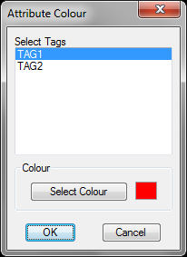

Attribute Colour
This page is delivered for consistency purposes only, as part of the LeeMac sample module of DynALisp, which shows how DynALisp turns existing AutoLISP programs into a module. The program and its description are the work of Lee Mac, who keeps all the credit for them. The original page, with the latest version, is on Lee Mac's website: https://lee-mac.com/attributecolour.html
| Function Syntax | LM-AttributeColour – original syntax: AttCol (see aliases) |
| Current Version | 1.0 |
| Compatible with AutoCAD for Mac? | No |
| Compatible with AutoCAD LT? | Yes |
| Original Page | lee-mac.com/attributecolour.html |
Program Description
This program enables the user to change the colour of multiple attributes simultaneously.
Upon calling the program with AttCol, the user is prompted to make a selection of attributed blocks containing attributes whose colour is to be changed.
Following selection, a dialog interface appears, enabling the user to select the tags of the attributes to be altered, and furthermore select the colour for the selected attributes.
Preview

Bundled program notes
;;-------------------=={ Attribute Colour }==-----------------;;
;; ;;
;; Prompts for a selection of attributed blocks and displays ;;
;; a dialog interface enabling the user to change the colour ;;
;; of specific attribute tags. ;;
;;------------------------------------------------------------;;
;; Author: Lee Mac, Copyright © 2011 - www.lee-mac.com ;;
;;------------------------------------------------------------;;
;; Version 1.0 - 24-02-2011 ;;
;; ;;
;; First Release. ;;
;;------------------------------------------------------------;;
Command Names And Aliases
As in every DynALisp module, each program of this sample module has one main command, named LM-*, and the original command names of Lee Mac's page are kept as its aliases: they run the same command, and can be added, renamed or removed in Dyl-Suite (saved in Resources\Aliases.csv).
| Command | Aliases | Name |
|---|---|---|
| LM-AttributeColour | ATTCOL | Attribute Colour |